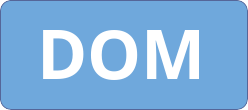
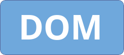

Hello! My name is Michael Alan Murphy Quille (you can call me Alan). This is a website I made showcasing various web development techniques I have learnt. These are accessible using the buttons at the top of the page.
This button takes you to this page. The following requirements from the project specification are satisfied:
This button takes you to a page which allows for login validation. The following requirements from the project specification are satisfied:
This button takes you to a page which allows one to change the style and content of a block of text using the Document Object Model (DOM). The following requirements from the project specification are satisfied:
This page allows one to access two bar charts; one generated from a CSV file and another generated from an array. The following requirements from the project specification are satisfied: